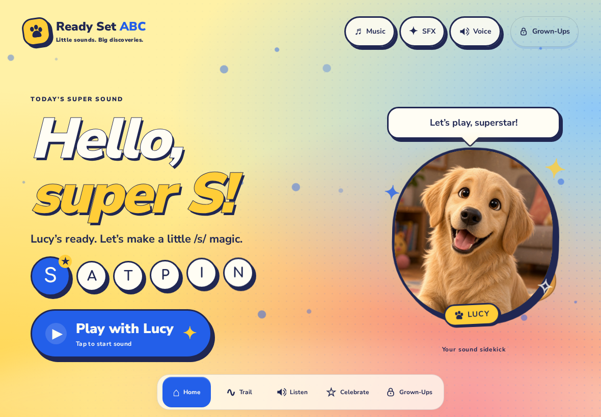
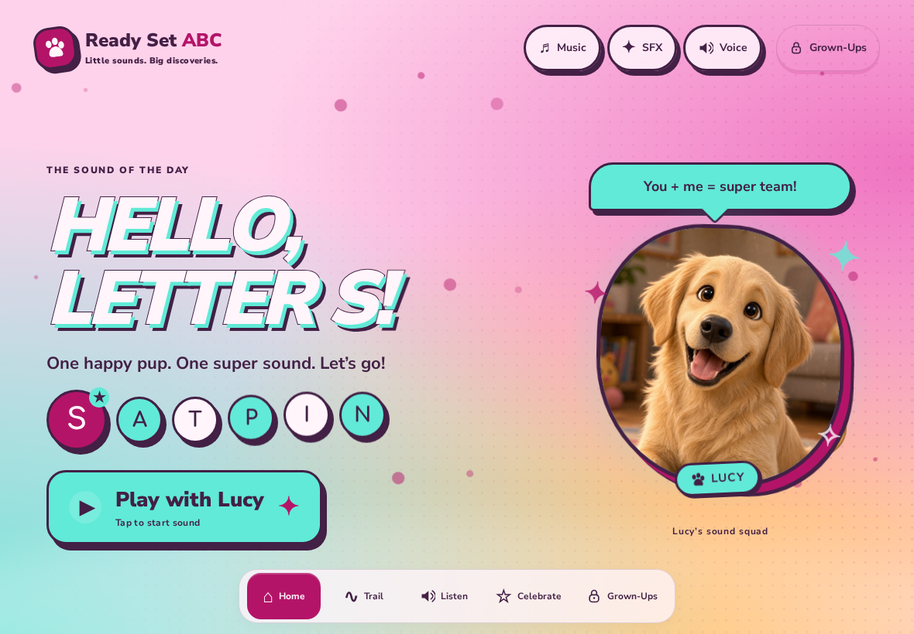
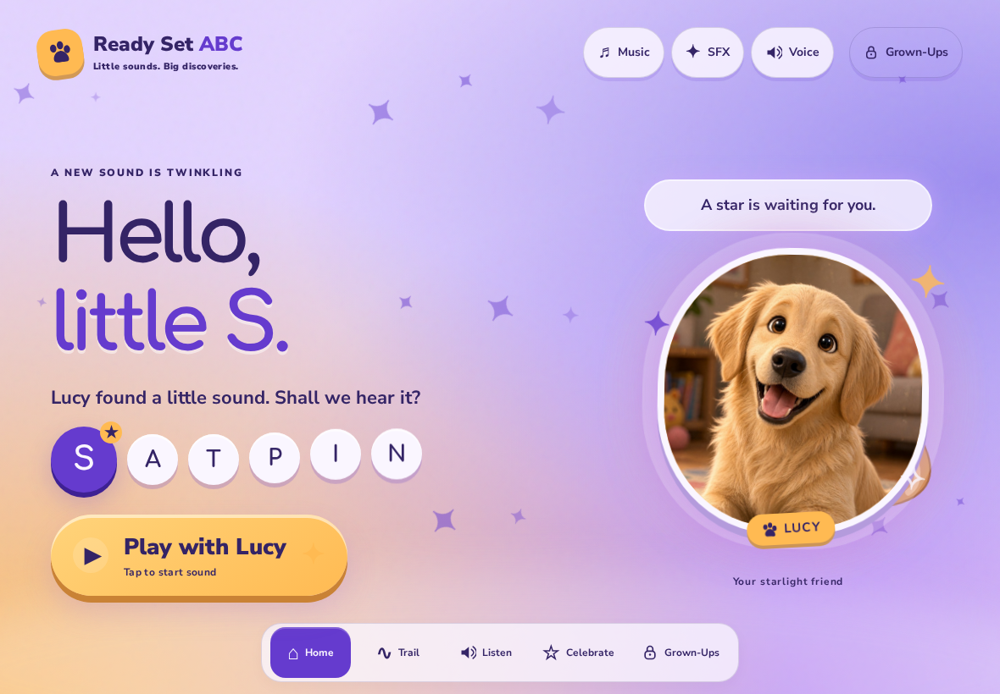
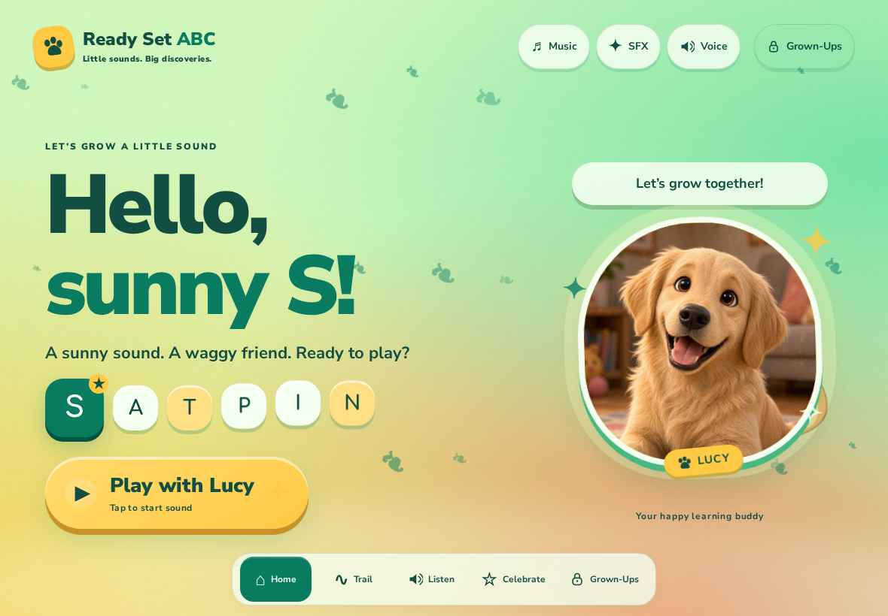

V01 · COMIC
Super Sound Club

A little sound. A big adventure. Citrus, cobalt and comic ink.
READY SET ABC · DESIGN EXPLORATION · ROUND 02
Silk Thread’s floating Lucy, gentle room and iris transitions, turned up to Stitch’s color volume. Two comic adventures. Two soft worlds.

A little sound. A big adventure. Citrus, cobalt and comic ink.

Small sounds, super powers. Berry pink, cyan and sticker panels.

Little sounds light up the sky. Violet glow, warm stars and pillowy orbits.

A happy little place to grow. Emerald, citron and bouncy toy pebbles.
Exploration only. Open any plate directly from disk. All fonts, Lucy photos and sound clips are local. Stills are captured at 1180 × 820 and 390 × 844; motion clips show the tablet interaction flow. Each plate includes a reduced-motion fallback.